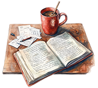
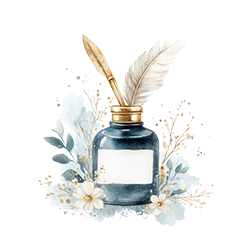

Articles, reflections, and practical tools for end-of-life planning, grief, and preparing important documents - for people who want to leave less confusion behind.
Read. Prepare. Use.
Most people avoid thinking about illness, death, or what happens after. That's normal.
This site is for people who are ready to change that - and write down what matters before someone else has to guess.
If you're here after a loss, you don't need to have a plan. You can just read.

Essays and guides about grief, illness, and end-of-life decisions - to help you clarify what actually matters.
What people wish they had written down →Free resources to help you gather end-of-life information and personal wishes in one place.
Take it one page at a time →Structured templates for end-of-life planning, paperwork, and personal records.
Explore planning tools →
I created these resources after watching families navigate not just grief, but everything that arrives alongside it - the paperwork, the unanswered questions, the decisions nobody was prepared to make.
My goal is to make planning clear, human, and something you can actually finish.